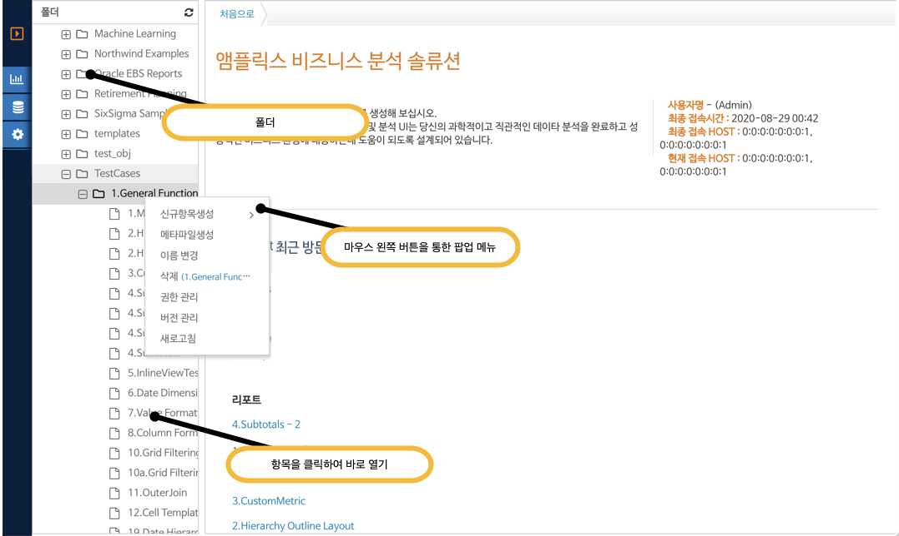

네비게이션
4.2. 폴더 관리
폴더 영역
폴더는 사용자가 접근가능한 리포트 혹은 항목의 목록을 보여 준다. 사용자는 또한 리포트를 생성하여 추후 공유 기능을 통해 접근 권한을 부여 할 수 있다.

(그림 : 작업 폴더 네비게이션)
팝업 메뉴
각 항목의 마우스 팝업 버튼을 클릭하여 세부적으로 사용가능한 옵션을 확인한 후 추가적인 작업을 할 수 있다.
폴더 메뉴를 마우스 왼쪽 버튼을 클릭하는 경우 신규 항목 생성, 메타 파일 생성 에 대한 메뉴가 나타난다.
신규 항목 생성을 마우스 오버 하면 폴더에 생성할 수 있는 항목들 목록이 보여 진다.
각 팝업 메뉴별로의 기능은 다음과 같다.
o 신규 항목 생성
폴더 : 하위 폴더를 생성한다.
리포트 : 분석 리포트를 생성한다.
비즈니스 오브젝트 : 테이블 혹은 인라인 뷰를 데이터베이스에서 추출하여 보고서 작성에 필요한 메타 정보를 저장하는 역할을 한다.
o 메타파일 생성
폴더의 내용을 백업하여 파일로 로컬 드라이브에 다운로드 받는다.
o 이름 변경
현재 항목의 이름을 다른 이름으로 변경한다.
o 삭제
항목을 삭제한다. 삭제 전에 확인 팝업이 나타나며, 예를 선택하는 경우 전체 하위 폴더의 내용을 포함하여 삭제된다. 긴 이름의 경우 마우스 오버를 통해 전체 이름을 확인 할 수 있다.
o 권한 관리
폴더에 접근가능한 권한을 설정할 수 있다. 상세 내용은 폴더 권한 관리 항목을 참조하여 작업을 수행한다.
o 버전 관리
이전 저장된 이력이 최대 10개 까지 저장이 되며 해당 리비젼으로의 복구, 이전 버전 내용을 새로운 파일로 저장할 수 있다. 상세 내용은 리포트 버전 관리 항목을 참조하여 작업을 수행한다.
o 새로 고침
폴더에 변경된 사항을 서버에서 다시 가져온다.